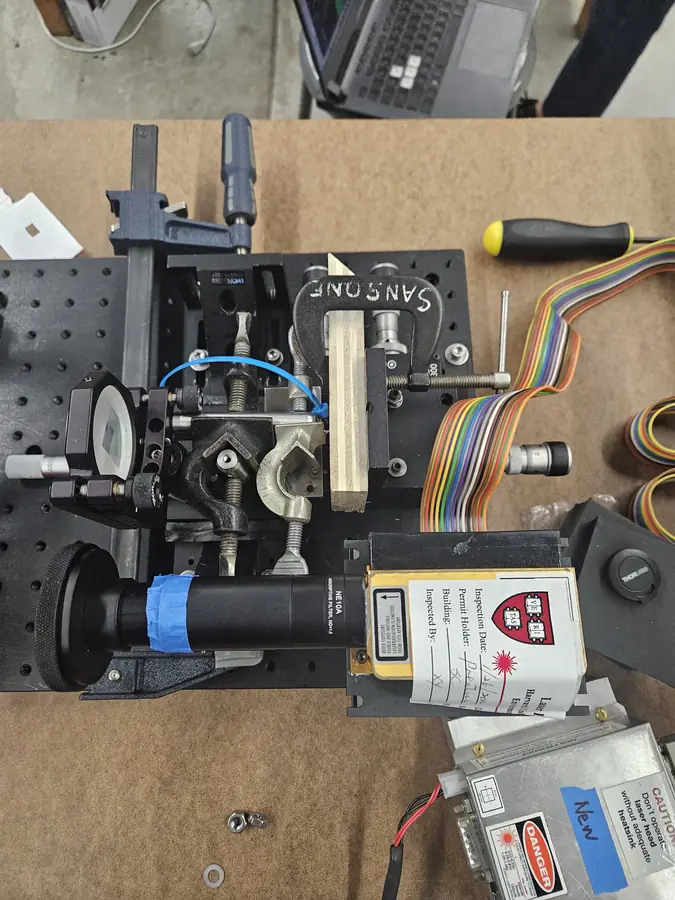
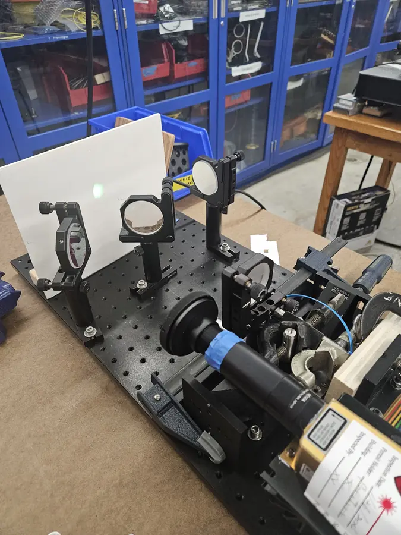
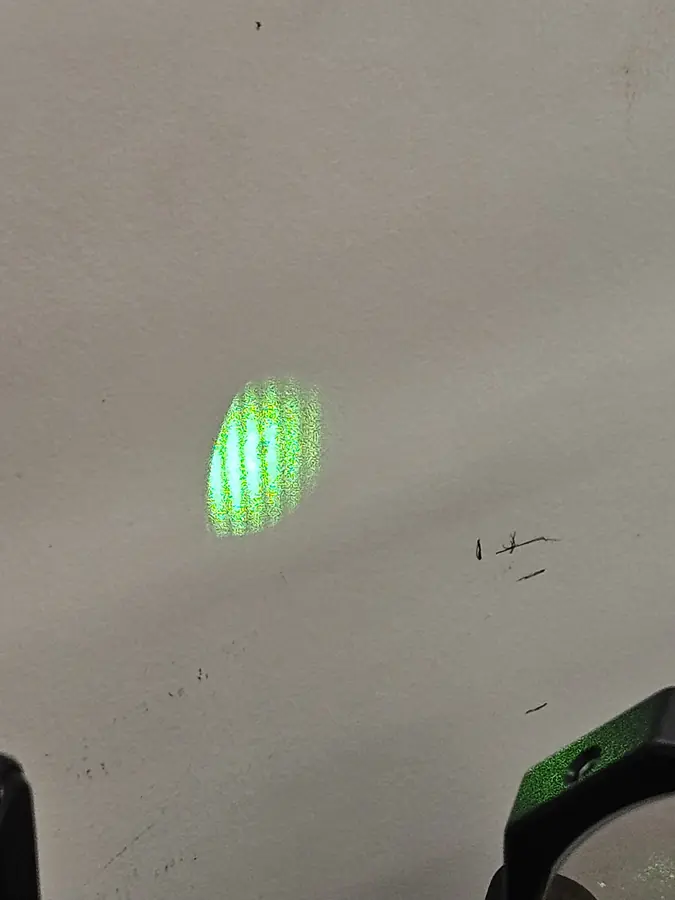

Principle
A Michelson interferometer splits one laser beam into two arms, reflects each off a mirror and recombines them. The brightness at the output depends on the difference in path length between the arms. Moving one mirror by just half a wavelength shifts the pattern by a full fringe, a few hundred nanometers for visible light.
Measuring a surface
This build turns that sensitivity into a surface profiler. The object being measured is dragged across the translating mirror, so changes in surface height become changes in the mirror's position and therefore in path length. As the surface rises and falls, fringes move across the detector. Counting them, and tracking how quickly they pass, gives the object's surface gradient along the scan at very fine resolution.
Alignment
The hard part is alignment. The two returning beams must overlap almost perfectly in both position and angle, or the fringes wash out or become too fine to resolve. The setup is built on an optical breadboard with kinematic mirror mounts, and the fringes are imaged on a Thorlabs camera so they can be recorded and analyzed.


